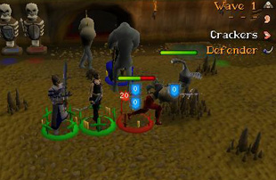
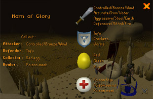
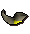

")
Barbarian Assault
Introduction | Location | Requirements | Recommended Items | Getting Started
The Horn | The Horn of Glory | Attacker | Defender | Healer | Collector
The Egg Launcher | The Penance Queen | Rewards | Development Team
The Horn | The Horn of Glory | Attacker | Defender | Healer | Collector
The Egg Launcher | The Penance Queen | Rewards | Development Team
Barbarian Assault is only accessible to RuneScape Members. Please subscribe to get this feature.
Please note this is a 'safe' activity. If you die during this activity, you will not lose your items.
Introduction

These barbarians are unusual in that they have adopted a rigid military structure to reflect how much they have atoned for their sins. The casual observer will note, though, that there are not many barbarians ranked above private...
In Barbarian Assault you and your friends take on this strange terror that breeds beneath the Outpost, working as a team to fight through nine waves of the Penance before coming face-to-eyeball-stalk with the Penance Queen.
Location

You can also teleport to Barbarian Assault by using the games necklace.
Requirements
There are no particular requirements to play Barbarian Assault, but you will be set upon by an increasing number of stronger and stronger creatures, so those with higher combat skills will be at an advantage.
Recommended Items
You do not need to bring anything with you to play Barbarian Assault, but good armour and a melee weapon capable of controlled, aggressive, defensive and accurate combat styles will be useful. As you cannot take your own arrows or runes into the caves beneath the Outpost, you should bank them before coming. For the purposes of ridding yourself of such items, you can find a deposit box in the entry hall.
Getting Started

Note: Captain Cain will talk for a fairly long time before he will allow you to descend into the caves below, but it is advised that you take careful note of everything he says.
The first thing to know is that Barbarian Assault is a team game: if you cannot play as a team, you will not get far. Each team is composed of five members who will work together to defeat each wave of the Penance.
After your briefing with Captain Cain, you can descend the ladder to find the recruitment rooms. There are two ways to start a game of Barbarian Assault:
- Go to the room marked '1' in the lower level. One player must pick up a recruitment scroll and 'use' it on the other players to sign them into the team and a role, then click 'Write-role' on the scroll yourself to choose your own role. Once all five people have signed up and the recruiter heads down the ladder, the game will begin. There are ten rooms marked with a number, each of which corresponds to a different wave. If you leave the activity you can come back and go straight to the wave you have reached.
- Go to the large room marked with an arrow, this is the quickstart room. As you enter this room you will have to sign up for a role. A game will automatically start once five people have signed up and at least one person has signed up for each role.
Each player will take one of four roles, with the fifth player choosing to 'double-up' on one role.
The Horn
When you enter the game you will all be given a horn with which to call out instructions to other members of your team. If you don't communicate you will find it very difficult to do well.
The interface in the top-right corner of your screen will show a few essential pieces of information.
![[image: penance wave]](../../img/main/kbase/minigames/barbassault/wave_number.gif "penance wave") |
This symbol indicates which wave of the assault you are currently in. There are ten waves of the assault, and the Penance Queen appears in the tenth. |
| This symbol tells you what you have been told to do. See below for more details. | |
| The 'mouth' icon tells you what you need to shout through your horn. See below for more details. | |
| The horn icon tells you who you are providing instructions for and who is providing your instructions. |
In order to make the most of your team, you will need to regularly update your team-mates with correct instructions. The attacker's horn will inform the collector of the colour of egg to collect, and the collector's horn will inform the attacker of the combat style/spell/arrow type to use. The healer's horn will inform the defender of the type of food to bait Penance runners with, while the defender's horn will instruct the healer on which poison to use on the Penance healers.
It is absolutely essential to get used to using the horns, or you will quickly find yourself bogged down in a tide of the Penance.
The Horn of Glory

To make use of the horn, simply click on it. This will bring up a large interface.
On the left side of this interface you will see a list of what everyone should be doing. On the right, you will see an option for each role. Click on an option on the right-hand side and you will use the horn to call out your instruction to whoever has the appropriate role.
Because you have five team members but only four roles, you may find it useful to have your fifth member (who has the same role as another player) use the Horn of Glory or the egg launchers when they have finished their tasks.
Attacker
![[image: vending machine]](../../img/main/kbase/minigames/barbassault/attacker_vending_machine.gif "vending machine") The attacker in Barbarian Assault has a fairly straightforward job: it is their task to kill the Penance fighters and rangers that pour out of the caves in the north of the chamber. Of course, it's a bit more complex than just that, as the Penance randomly become immune to certain combat styles, spells and arrows. In order to kill the fighters and rangers, you need to use the correct method; the collector should use their horn to tell you what to do.
The attacker in Barbarian Assault has a fairly straightforward job: it is their task to kill the Penance fighters and rangers that pour out of the caves in the north of the chamber. Of course, it's a bit more complex than just that, as the Penance randomly become immune to certain combat styles, spells and arrows. In order to kill the fighters and rangers, you need to use the correct method; the collector should use their horn to tell you what to do.
The attacker only needs to bring an appropriate melee weapon or bow. Runes and arrows will be provided from the dispenser in the south of the chamber, marked with the red 'sword' symbol. If you take runes, you will receive up to 50 elemental and catalytic runes; if you take arrows, you will receive up to 50 bronze, iron, steel and mithril arrows.
![[image: horn]](../../img/main/kbase/minigames/barbassault/attacker_horn.gif "horn") The attacker should use their horn to shout instructions to the collector.
The attacker should use their horn to shout instructions to the collector.
Defender
![[image: vending machine]](../../img/main/kbase/minigames/barbassault/defender_vending_machine.gif "vending machine") The defender's duty is to eliminate the Penance runners. Runners will normally make their way through the cavern from the entry points in the north to the exit in the south. They can only be killed by being lured onto the traps in the east and west of the cavern. The defender can also build barricades across most of the Penance entry points.
The defender's duty is to eliminate the Penance runners. Runners will normally make their way through the cavern from the entry points in the north to the exit in the south. They can only be killed by being lured onto the traps in the east and west of the cavern. The defender can also build barricades across most of the Penance entry points.
To lure the runners into the traps, the defender will need to use either worms, crackers or tofu to lay a trail for the runners to follow. This trail should end on the trap itself to make sure that the runner pauses there long enough to be cut into tiny pieces by the trap. Unfortunately, the runners are fickle, and will often change the type of food that they desire; sometimes they may even ignore the bait and simply run for the exit. The defender will be told what food they need to use by the healer.

The defender can collect supplies of the bait foods from the vending machine marked with a blue 'shield' symbol.
The traps are not terribly well built, so after killing two runners it will need to be repaired. To repair a trap, simply use a hammer on it while you have logs in your inventory; alternatively, right-click on the trap and select 'Repair' while you have a hammer and logs in your inventory. You can find a hammer and some logs in the north of the cavern, as shown in the map above.
Barricades can be built by using a hammer on the barricade spot while you have logs in your inventory. A barricade will prevent the Penance from coming in through that entry for a period of time.
![[image: horn]](../../img/main/kbase/minigames/barbassault/defender_horn.gif "horn") The defender should use their horn to shout instructions to the healer.
The defender should use their horn to shout instructions to the healer.
Healer
![[image: vending machine]](../../img/main/kbase/minigames/barbassault/healer_vending_machine.gif "vending machine") The healer has two jobs to do in Barbarian Assault. Firstly, it is up to them to make sure that no one dies in the caverns. Secondly, they must poison the Penance healers.
The healer has two jobs to do in Barbarian Assault. Firstly, it is up to them to make sure that no one dies in the caverns. Secondly, they must poison the Penance healers.
To heal other players, the healer must collect an empty vial from the dispenser in the south of the cavern marked with a green 'cross' symbol. This vial must then be filled from the pool of green liquid across from the dispenser. The healer may then use the vial on the players to heal them. Note that the healer can only have one vial at a time.
The healer can heal themselves and restore their run energy by drinking directly from the pool.
To poison the Penance healers, the healer must collect poisoned worms, tofu or meat from the dispenser and use them on the Penance healers. The Penance healers are highly adaptable and will only be vulnerable to certain poisoned foods at certain times. The healer will be told which food to use by the defender.
![[image: horn]](../../img/main/kbase/minigames/barbassault/healer_horn.gif "horn") The healer should use their horn to shout instructions to the defender.
The healer should use their horn to shout instructions to the defender.
Collector
When Penance creatures die they leave a mass of eggs behind. These eggs can be used as effective weapons against the Penance, but they are very unstable. It is the collector's job to pick up the correct eggs at the correct time.
The collector will be told which colour to pick up by the attacker. If the collector grabs the wrong colour of egg, the egg will explode and do a small amount of damage.
Eggs can be loaded into the egg launcher. See below for more details.
 The collector should use their horn to shout instructions to the attacker.
In addition, the collector can take green and blue eggs to a converter (next to the dispensing machines) and try to change them for another type. A green egg will be converted to a red egg and a blue egg will be converted to a green egg. The chance of success depends on the level the collector has reached (see the Upgrading your Barbarian Assault skills section below).
Note
To find out more about the various Penance creatures, you can go up to the Barbarian Assault entrance hall and look at the statues.
The Egg Launcher
![[image: egg launcher]](../../img/main/kbase/minigames/barbassault/egg_launcher.gif "egg launcher") There are two egg launchers in each cavern, on top of the pillars in the middle. The eggs that the collector gets from dead Penance creatures can be fed into the egg launchers allowing any player to fire them at the Penance.
There are two egg launchers in each cavern, on top of the pillars in the middle. The eggs that the collector gets from dead Penance creatures can be fed into the egg launchers allowing any player to fire them at the Penance.
To fire the egg launcher, simply click on it then select a type of Penance creature and a type of egg to fire. If you have any of those eggs loaded and one of the creatures is still alive, you will automatically target a Penance creature and fire the egg at them. It couldn't be simpler! There is also no penalty whatsoever for using the egg launcher and any team member can use it regardless of their role, so don't hesitate in doing so.
Each type of egg has a different effect:
![[image: egg]](../../img/main/kbase/minigames/barbassault/green_egg.gif "egg") |
Green egg The green egg will poison any Penance creature that it hits. Like all poisons, it will eventually wear off. |
|
![[image: egg]](../../img/main/kbase/minigames/barbassault/red_egg.gif "egg") |
Red egg Red eggs are explosive and will inflict immediate damage to the target Penance creature. The explosion will also damage any nearby Penance creatures. |
|
![[image: egg]](../../img/main/kbase/minigames/barbassault/blue_egg.gif "egg") |
Blue egg Blue eggs implode on contact with Penance creatures, which will briefly stun their target. This will leave them unable to move or attack for a short period, will reduce the Penance's combat stats, and do a small amount of damage. |
The Penance Queen
It is a good idea to take the Queen book with you when you reach the tenth wave. This includes all the instructions you should need to defeat her. You can get a Queen book from the table in the tenth wave recruitment room.
There are nine 'normal' waves of the Penance to defeat, but the tenth and final wave could not be called ordinary by any stretch of the imagination. It is during the tenth wave that your team will encounter the mighty and terrifying Penance Queen.

The cute and cuddly penance queen
The tenth wave of Barbarian Assault begins in an entirely different cavern, although initially the attack will be the same. Your team must defeat the usual combination of runners, fighters, rangers and healers before the Queen will appear.
The Queen cannot be defeated by any single player. Nor can she be killed by normal means: she will shrug off arrows, swords and spells; traps are too small to concern her; she is immune to all of the usual poisons; green, red and blue eggs fired from the launcher will have no effect. To kill the Queen you must construct omega eggs; the collector starts by picking up yellow eggs.
The yellow egg is quite harmless to the Queen initially. To make it into a weapon you must pass the yellow egg from player to player, adding spikes, poison and heat before it has a chance of hurting the Queen.
![[image: egg]](../../img/main/kbase/minigames/barbassault/yellow_egg.gif "egg") |
The yellow egg is laid by the Queen. It must be picked up by the collector who will then pass it to the healer by using it on them. | |
![[image: egg]](../../img/main/kbase/minigames/barbassault/poisoned_egg.gif "egg") |
The healer must take the yellow egg and use it on one of the green pools scattered around the cavern to poison it - the healer's pool in the south will not work. They must then pass the egg to the attacker by using it on them. | |
![[image: egg]](../../img/main/kbase/minigames/barbassault/poisoned_spiked_egg.gif "egg") |
The attacker must take the poisoned egg and add spikes to it. The attacker can get spikes from the mushrooms that grow around the edge of the cavern. They must then pass the egg to the defender by using it on them. | |
![[image: omega egg]](../../img/main/kbase/minigames/barbassault/hot_poisoned_spiked_egg.gif "omega egg") |
The defender must take the poisoned and spiked egg and use it on the lava to heat it enough to harm the Queen. This is now the omega egg. They must then pass the omega egg to the collector by using it on them. |
Once the collector has the omega egg it can be loaded into an egg launcher and fired to devastating effect.
Of course, nothing is quite so simple: the players will have to contend with the Queen while doing this, as well as the distraction of the many Penance spawn that scuttle about the floor around her. Penance spawn can be killed by anyone using any form of attack.
Hint: If you're finding it difficult to remember the order in which to pass the egg around, simply remember CHAD (collector, healer, attacker, defender) - there was a mighty barbarian called Chad many years in the past, when the Penance first appeared, who devised this method of treating the eggs, and so the barbarians remember him always by following this same method.
Rewards
In the waiting rooms for Barbarian Assault, you will find a switch that determines your reward for playing through the waves. This switch can be used to change between 'XP' or 'points' rewards: put simply, you can choose to gain additional skill experience, or you can choose to gain a Barbarian Assault currency that can be exchanged with Commander Connad for items.
XP rewards
![[image: penance horns]](../../img/main/kbase/minigames/barbassault/horns.gif "penance horns") |
To receive XP rewards, you need to have a penance horn or a master penance horn in your inventory or bank. These can be obtained for free from Commander Connad, but a master penance horn can only be obtained if you are level 5 in any of the Barbarian Assault roles. |
As long as you set the switch in the Barbarian Assault waiting rooms to 'XP', you will find that your penance horn charges up as you play through waves in Barbarian Assault (more charge is awarded for completing the later waves). Right-click and 'check-potential' your horn to see how much charge your horn currently holds.
With charge on your penance horn, you will automatically receive double the amount of XP when completing the following skill tasks:
- Firemaking with logs
- Mining ores
- Completing agility courses (not including Werewolf Skullball, Brimhaven Agility Arena or the Agility Pyramid)
Points rewards
As long as you set the switch in the Barbarian Assault waiting room to 'Points', you will gain honour points for completing waves. You may 'spend' these honour points by talking to Commander Connad, who can be found in the Barbarian Assault entrance hall, near Captain Cain. With these points, you can choose to upgrade your Barbarian Assault skill levels, purchase equipment or gamble your points.
Upgrading your Barbarian Assault roles
If you intend to save up for some of the more expensive items, you would do well to upgrade your various Barbarian Assault roles. This will make you more effective in whatever role you choose to improve; for instance, upgrading your collector role will enable you to hold more eggs in your pouch so that you can be more efficient.
Obviously, the better you are in each role, the faster you can work your way through each wave, and the faster you will earn more honour points.
This table summarises the advantages gained with each level in each role. Everyone begins at level one in each role:
| Role | Level 1 | Level 2 | Level 3 | Level 4 | Level 5 |
| Attacker | +1 damage on Penance | +2 damage on Penance | +3 damage on Penance | +4 damage on Penance | +5 damage on Penance |
| Defender | Increase range that Penance runners search for food | Increase range that Penance runners search for food | Increase range that Penance runners search for food | Increase range that Penance runners search for food | Increase range that Penance runners search for food |
| Collector | Pouch holds 2 eggs Cannot convert eggs |
Pouch holds 4 eggs 70% chance of converting eggs |
Pouch holds 6 eggs 80% chance of converting eggs |
Pouch holds 7 eggs 90% chance of converting eggs |
Pouch holds 8 eggs 100% chance of converting eggs |
| Healer | Able to heal 100 life points per potion | Able to heal 150 life points per potion | Able to heal 200 life points per potion | Able to heal 250 life points per potion | Able to heal 350 life points per potion |
If you manage to attain level 5 in any of the different roles, you will see a subtle change to the role icon that circles your player's feet during a game of Barbarian Assault. You will also be able to upgrade your penance horn to the master penance horn for free from Commander Connad. The master penance horn has all the abilities of the penance horn, with the addition of an emote when you select it and 'Call'.
Equipment
There are several items unique to Barbarian Assault that you can purchase from Commander Connad at the price he lists.
Click here to read about the different weapons and armours you can purchase from Commander Connad.
It is also possible to pay Commander Connad to paint your abyssal whip or dark bow, should you have them in your possession. They can be painted green, white, yellow and blue. Painted items are untradeable, but have no effect on their potency in combat.
![[image]](../../img/main/kbase/minigames/barbassault/whips.gif)
Gambling your points
![[image: rune arrows]](../../img/main/kbase/weapons/ranged/rune_arrows.gif "rune arrows")
To gamble points you can elect to spend 10, 20 or 30 points. Gambling 10 or 20 points will give you random items, but if you want to have a chance of winning anything like a dragon chainbody, you will have to gamble 30 points. Of course, the odds of winning a dragon chainbody are comparable to the odds of Zamorak deciding to give up his evil ways...
Development Team
Developer: Tim C
Graphics: Matthew M, Kavi M, Paul B
QA: Martin I
Audio: Ian T

More articles in
Activities
|
|
|
Further Help
If this article does not help you, you may find the following sections of the RuneScape site helpful:
|
|